GM「さあ始めましょう、エターナルキャンペーン第…何回だっけ？」
わし「そのためのレポです、第7回になります」
ピーター「戦いの装束溜まってきたなー」
みぞれ「何枚あるんです？」
ピーター「18枚」
みぞれ「18枚」
GM「ここでお知らせです。皆のサプリメントの所持情報を考慮し、次回からイグニスブレイズを導入します。これによって戦闘特技の取り直しを認めます。特にナナシは影響大きいと思うよ」
タッシュ「後衛はほとんど影響ないはず」
ここでおもむろに未開封のイグニスブレイズを取り出して笑いを取る私であった。
いやほんと買ったはいいけど仕事やらソシャゲやらリプレイやらで読む暇がないんですよｗ
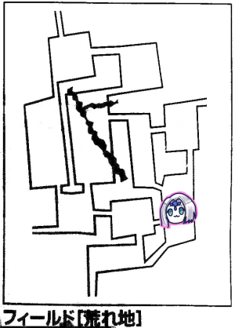
GM「さて、前回の続きです。前回は遺跡から出たところだったので、君たちはまだフィールドにいます。ブルーローズ、主の移動を振ってください」
「これ主がここに来て逃げる場合どこに逃げることになるんですか？」
GM「それは…バグですね、一度クリアした遺跡には二度と入ることはできませんので、遺跡の中に逃げ込むことはできません。そうですね、ランダムでエリア移動にしましょう」
ブルーローズ「ころころ…3です」
GM「主は来ません」
「で、どうする？街に行く？村に戻る？」
ブルーローズ「街に行きたいです、錆びた武器防具を揃えなきゃ」
タッシュ「今、セズウィック村で買えないもの持ってる人いるの？」
GM「村は発展レベル2になっているので買えるものが増えてます」
タッシュ「魔法の発動体を武器に付けるやつは買える？」
GM「魔法アイテム扱いになるのかな？」
タッシュ「魔法の発動体そのものは最初から買えるようになってるんだよね、ないと困るからだろうけど」
GM「あー、もういいや買える買えるｗ」←めんどくさくなった模様ｗ
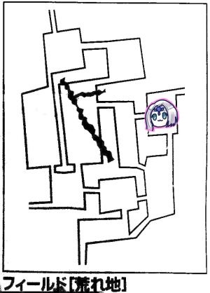
イベントは特に起こりませんでした。
探索判定です。
ナナシ「成功、宝の種類は11」
GM「剣のかけらが手に入りました」
「何て？」
GM「剣のかけらが手に入りました」
ナナシ「そういや11って出したことなかったか？剣のかけらなのか」
みぞれ「戦いの装束見つけました」
ピーター「19着目」
ブルーローズ「ブティックが開ける」
波乱万丈の冒険から村に帰ってきました！
GM「おさらいになりますが、この時点でまだ経験値は入りません。ミッションをクリアしないと精算ができないことに気をつけてください」
「あれだけ魔物倒したのに…」
「とりあえず寝ますよね？どれぐらい寝る？」
「HPってどれだけ回復するんだっけ」
「3時間で1割、6時間で2割かな」
「寝る前に回復すべきやつか」
「ウィザードリィ方式か」
「誰もそんなHP消耗してないよ、大丈夫大丈夫」
わちゃわちゃしながら回復処理を行いました。
ピーター「GMー、風来神ル＝ロウドって信仰できますか？」
GM「大神だしよほど地方に行かない限りは大丈夫だね」
ブルーローズ「うさちゃん神官になるの？」
ピーター「振り直しができる魔法使いたくて」
「タビット神官になれないよ？」
ブルーローズ「タビットは神様に嫌われてるから！」
ピーター「((((；ﾟДﾟ))))」
みぞれ「自分たちが太古の神々の戦で破れ、呪いをかけられた神の末裔だからだと考えているようです、真相は不明です、だって(るるぶ)」
ピーター「中二病」
ピーター「ところでパーティー財布に3660ガメルあるんですけど」
「いつ使うんだ」
「ピンチの時かな」
「ここを通りたければ通行料払ってもらおうか」
「あったなそんなピンチ」
現時点で受けられるミッションがエターナルシナリオ以外討伐ぐらいしかないようです。
みぞれ「プーカからの討伐依頼なかったっけ」
「森林で薬草が採れないからってやつか」
GM「依頼にはミッションとクエストがあり、クエストはちょこちょこした小さなもので、ミッションがでかいものと考えてください」
みぞれ「森林エリアに大蛇の討伐クエストって書いてある…これクエストだ…ちょっと待って、なんか遺跡soldって書いてあるｗｗｗ」
画像どこか行きましたがシドの小屋の裏手で見つけた遺跡は通行料要求マンたちに売ったのでマップにsold!と書かれていました。
「戦闘特技の取り直しのタイミングでレベルアップしたいから、今回で終わるやつがいいです」
GM「討伐ミッションとかどうかな？クリアすると防衛ポイントが1、名声が3上がります。名声値20で騎士団ができます」
「騎士団」
「やっぱり渓谷にオボロン探しに行きますかー」
「遠いけどね」
「道中戦闘ばかりになったら今日中に終わらなさそう」
GM「期待値を考えてもそこまで敵が出まくるはずないんだけど、このパーティー普通にそういうことやるからなー」
「そうならないことを祈って、行きましょう」
GM「では村長のローレンス・ベルチから依頼を受けに行きます。ミッションはオボロンの廃都で刻印を手に入れることです。刻印を手に入れるためには廃都への門を開く必要があり、門を開くにはバード技能で該当曲を歌うことが必要です」
みぞれ「シドに渓谷の情報聞きません？」
ピーター「パーティー財布から情報量出しましょ。情報料はブロック番号×100…と、渓谷は8番なので800ガメルですね」
GM「ちょっと待って(ちょきちょき←コピーしたマップから渓谷を切り取る音)」
「この人、渓谷に着いた時にマップ用意するつもりだったのではｗ」
GM「シドによると、渓谷エリアの北西の川沿いが主の巣のようです。主はヒドラ。魔物知識判定できますよ」
ピーター「…ファンブル」
「開幕ファンブル」
GM「1ゾロポイントどうぞ。ライダー技能でも判定できますよ」
みぞれ「12」
GM「目標値は17です、わかりませんでした」
探索開始です！
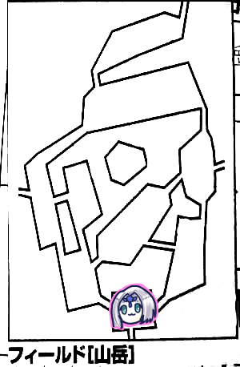
みぞれ「イベント振りまーす…げ、5」
「いきなり敵か？」
GM「山岳イベントです。もう1d6どうぞ」
みぞれ「1」
GM「がけ崩れが発生しました、回避判定をどうぞ」
みぞれだけが失敗して盛大にダメージ受けました。
ピーターにヒールウォーターしてもらうみぞれ。
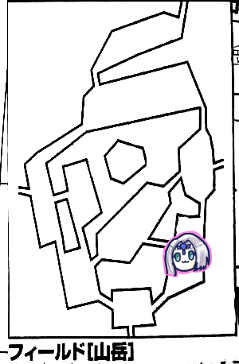
東に向かいます。
タッシュがイベントを振って4、山岳イベント2。
GM「地震が発生しました。崖崩れが起こります」
「またかー」
GM「これは必中になりますので避けられません」
ピーター「パークメイルかけられませんか」
GM「いいでしょう、どうぞ」
ピーター「ではパークメイルを全員に。カード5枚消費します」
GM「ころころ…16点ダメージを受けてください」
ピーター「パークメイルで-1点してくださいねー」
「敵に遭わないのにダメージがすごい」
「サイコロ1とか2とかって穏やかなイベントじゃないの？」
ナナシ「それじゃ探索しまーす」
「あ、ちょっと、ここはしげみエリア…気を付けないと…」
GM「ではナナシ、1d6をどうぞ」
ナナシは白い悪魔を回避しました。
「気を付けて」探索するという宣言がないと白い悪魔に襲われるようです。
但し「気を付ける」と、目標値が高くなるようです。
これって書かなかったリプレイの時に出てきたやつだったっけ？
ナナシ「探索結果は11！剣のかけらかな？」
GM「1d6振ってください」
ナナシ「えっ何？4」
GM「赤い花が咲いています、見識判定できますよ」
ピーター「ひとまず回復しまーすみんな集まって、ウィスパーヒール2発撃ちます」
「うさちゃんを囲む会」
ピーター「ゾロ目じゃなければ成功です」
GM「それは2ゾロとかでもダメなの？」
ピーター「1ゾロですｗはい発動」
ピーター「赤い花の見識判定しまーす、6が出れば成功です！…うわああんいちたりないー！」
GM「君たちは『山岳の赤い花』を入手しました。価値は分かりません。街でお金を払って鑑定してもらうことはできます」
「これは魔物を追い払う花では？」
GM「違います。ここに生えているわけではなく、山岳の探索判定で11が出ると入手できるものです」
「さっきナナシが振った謎の1d6は？」
GM「花の状態を決めるロールですね」
ブルーローズ「そういえばタッシュはフローライトだから白い悪魔は効かないのでは？」
GM「あー…このシナリオはフローライト考慮してないんだよなあ…でも白い悪魔は毒なんでタッシュは無効としましょう」

北へ向かいます。
ピーターがイベントを振って1。何も起こりません。
ブルーローズ「じゃ探索しまーすころころ。わああああああやったああああああファンブルぅぅぅぅぅ！！！！！」
「経験値になるファンブル久しぶりだもんなぁ」
「いつも攻撃スカる1ゾロばっか出してるもんなぁ」
ナナシ「レミングの歯見つけました」
みぞれ 「レミングの歯見つけました」
「レミングの歯祭」
ブルーローズ「それじゃここから東に行きましょう！」
「東って…行ったことのないエリアになるんだけど？？？」
ブルーローズ「こっちの方がすぐに行けるかもしれないじゃん！」
「それじゃちょっと立ち寄ってマップ見て決めるか」
GM「あ…えーっと、エリアに踏み入れたらマップ全部公開するのは間違いでした。そうでなきゃシドの情報の意味がないからね、なので特別にシドから情報買ったことにしていいよ」
ピーター「それじゃパーティー財布から500ガメル払います」
GM「ちょっと待って(ちょきちょき)」

GM「はい、山岳エリアの東は沼地になりました。マップはこんな感じです」
「中央エリア広いな！」
「そこにはTRPG沼に引きずり込もうとするGMが！」
GM「ふふふ、この沼に来たらセッションから帰れないぜ…って、違うｗえーと、この中央エリアが主の巣になります。主はアンデッドジェネラル」
「アンデッド来た」
GM「知名度は16になります、判定どうぞ」
ピーター「うう、失敗です」
みぞれ「いえええええファンブルううううう」
「で、東はこれ無理ですね。北に抜けるのにすごい大回りになる」
「大回りになる上に、なにこの2番エリアの線」
「何があるか分からないし、行くのはやめよう。北へ行こう北へ」
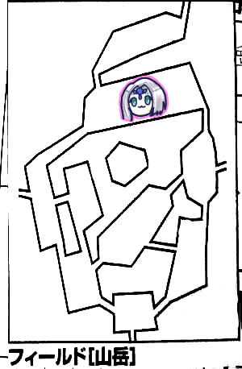
ナナシがイベントを振って1。何も起きません。
更に北へ。
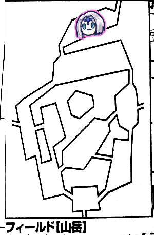
木こりの集落です。
ブルーローズ「木こりにさっきの花のことを聞けませんか？」
GM「なるほど。そうですねー、木こりは花のことは知らないけど、他の冒険者に聞いたとかいうことがあるかもしれません。見識判定をもう一度できることにしましょう」
ピーター「ころころ…失敗…」
ブルーローズ「木こりさん！かまどを貸してくださいませんか！？」
みぞれ「パイにするつもりだ」
ピーター「ぷるぷる…」
ピーター「えーと、MPそこそこ消費してるので休憩したいです」
木こり「おお！お前さんたちはあの時の冒険者！約束通り、タダで泊めてあげよう！」
「まさかの木こりチケット」
「どなたでしたっけ」
「既に1回泊めてもらってるよね？」
「あの後にまた助けてたような」
「1回目がプーカの依頼の時(多分第2回)で、2回目がシドの依頼の時(第3回)だと思う」
探してきました。シド探索回は合っていました。が…
GM「どうやら猟師が誤射したようです。ランダムでパーティーの誰かに当たります」以上、第4回エターナルリプレイより
「誤射されそうなPCがいる場合は？」
「うさぎかわいそうだろ」
GM「では判定を。タッシュに行きました、回避判定どうぞ」
タッシュ「避けられません」
GM「12点ダメージです」
タッシュ「は？いや待って死にそう死にそう」
「そいつ一般人でしょう？なに冒険者みたいなダメージ叩き出してんの？」
GM(猟師)「いやーすまんすまんてへぺろ」
「お前慰謝料払えよ」
GM(猟師)「では我々の村に1回タダで泊まる権利をやろう」
「またそれかｗｗｗ」
木こりチケットは慰謝料だった！
GM「というわけでタダで泊まれます。保存食の消費も不要です。きこりメシがふるまわれます」
「鹿肉とかありそう」
「ジビエ料理ですね」
「うさぎのステーキとか」
「うさぎ料理されすぎでは？」
「なんかスポーツ漫画のライバル校みたい、『お前は失敗したらパイの刑だ！』恐怖で支配されるライバル校チーム！」
「主人公『そんなことは間違っている！楽しんでやるのが一番だ！』」
「敗れたライバル『俺が間違っていた…』」
GM「え、そこまで進むの？」
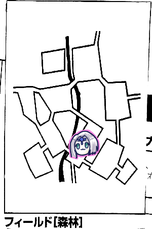
北へ。森林へ移動しました。
ブルーローズがイベントを振って4が出ました。
森林イベント3。
GM「猛毒を持つ植物が現れました！危険感知判定どうぞ」
全員成功。
ブルーローズ「タッシュは毒効かないんでしょう？タッシュを盾にして進みます」
「こいつ白い悪魔みたいなやつ？」
GM「白い悪魔の上位互換ですね、白い悪魔セカンド。もっと強力になってます。ガンダムがZガンダムぐらいになってます」
ガンダム勢しかわからんぞそれｗ
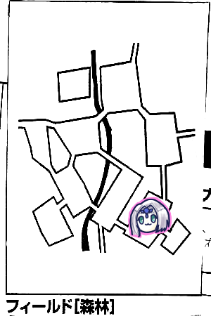
東へ移動。
GM「ここの北はブルーローズが主の居場所を見事に言い当てた思い出の場所ですね」
ナナシ「ピンポイントで当てるの、のび太くんが○×で0点取る原理だよね」
ここは暗い森です。が、例によってフローライトのタッシュのおかげでペナなしです。
みぞれがイベントを振って5、森林イベントで2。
GM「危険感知判定どうぞ」
「またか」
GM「吸血ツタです」
全員成功。
ナナシ「探索しまーす、遺跡見つけました」
嘘でしょう3つ目ｗｗｗ
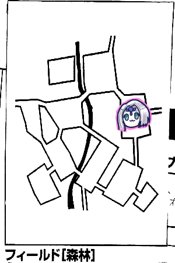
北へ移動。
鬱蒼とした森です。
タッシュが4を振って森林イベントも4。
GM「危険感知判定どうぞ」
「あれ、また？」
ブルーローズ「うう…失敗しました」
GM「ブルーローズ、ちょっとキャラシー見せて」
「何が起こるんだ…」
「ひょっとして破られる？こんなキャラじゃダメだな！びりびりー」
「キャラシーにダメ出しイベントとは」
GMがキャラシー＆キャンペーンるるぶとにらめっこしてる間に繰り広げられる大喜利であった。
GM「泥棒植物です。ブルーローズは俊敏の腕輪を盗まれました」
ブルーローズ「ふえええええ」
「ブルーローズまた盗まれてるな」(第3回で命のリボンを盗まれてる)
「え、あの時ランダムじゃなかった？」
GM「これ盗む優先順位があるんですよ。手が最優先なんです」
「手…って大体腕輪か指輪がはまってるじゃん、鬼畜か」
「ちょっとこれ装備移動しておくか…」
ブルーローズ「でも成長で能力値上がったのでボーナスはそのままです！」
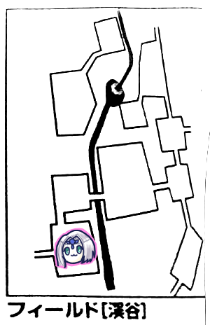
東へフィールド移動しました。
渓谷です。初めてのエリアです。
深い谷間を走る激流が大きな音をたてています。
激流に削り取られた大地が崖になっているようです。
グランドキャニオンとかそんな感じですかね。
GM「君たちはこの渓谷エリアで遺跡の場所を探し出さなければならない！」
「おい、なんか難易度高いことを要求してきたぞ」
GM「違った遺跡じゃなくて廃都」
前回得た情報によれば、蒼き大蛇が鎌首をもたげた場所に廃都オボロンがあるとのこと。
蒼き大蛇とは滝のことではないか、と推測していましたが…
「蒼き大蛇ってもしかしてヒドラのことでは…」
「ということはヒドラの巣が該当箇所になるのかな」
「でもこの巣って行く道がなくない？どうすればいいんだろ」
「ここに行く方法ってシドから聞いてたりしない？GMの判断でマップ構成と主以外の情報も教えてかまわないって表記が」
GM「…あっ、それ、マップが違う」
どうやら吊り橋があるはずなのに書いてないらしいです。
後から思ったんですが、吊り橋は現地に行ったら分かる情報ということで、マップ表記がなくて正解だったのでは？
ピーターがイベントを振って、1だったので何も起きませんでした。
主の移動もブルーローズが振ります。
GM「このエリアには船小屋があります。ボロボロで誰も使っていないようです。ここを調べる場合、全員で調べなければなりません。船小屋に入ってみる人はいますか？」
「え、怪しい、聞き耳とかする？」
「聞き耳ってスカウトだっけ」
「…あれ？バード見識判定できるじゃん」
「まじ？え、花見れる？」
GM「やっていたはずの見識判定をここでやってもいいことにしましょう」
「2回機会があったから2回やっていいよね」
ブルーローズ「ではいきますわよ」
ナナシ「ブルーローズ、自分のサイコロ、今日めっちゃ出るよ、使って」
ブルーローズ「借ります！ころころ…失敗、出ないじゃん」
ナナシ「次自分のでやったら？」
ブルーローズ「ころころ…失敗」
ナナシ「出ないじゃーん！」
「親切と見せかけてそれが言いたかったんだな」
ナナシ「聞き耳判定しまーす」
GM「渓谷の音が邪魔で何も聞こえないですね」
「じゃあ船小屋に入ってみますか」
ナナシ「俺から入る。コンコン、誰かいますかー」
GM「ノックで扉が内側にドーンと倒れました！」
タッシュ「自動扉だｗ」
GM「中には青白い光が灯っています。よく見るとそれは人型をしていて、とても険しい表情をしています。魔物知識判定どうぞ」
ピーター「ころころ…成功です」
GM「ゴーストです。弱点も抜きました。男性のゴーストです。耳障りな甲高い声で、この子は何があっても守る！と叫んでいます。先制判定どうぞ」
「は？戦闘？」
「第一回の時みたいに色々情報をくれる非戦闘ゴーストじゃないのか…」
ナナシ「ころころ…先制取りました！」
GM「はい、このゴーストですが、小屋から出るなら何もしてきません」
ブルーローズ「では説得します、私達は蛮族ではありませんわ！」
男性ゴースト「何を言っているこのボガードがー」
GM「正気を失っているようです」
ナナシ「ブルーローズ、バード取ったんだから呪歌歌えないの？念仏とか」
ブルーローズ「そういうのは歌えないんだ、サモンスモールアニマルだけしか」
ナナシ「サモンスモールアニマル聞いたら成仏するかもしれないよ？」
タッシュ「サニティが使えれば…これ接触なんだよなあ」
ブルーローズ「サニティ…そんなものもあるのか」
GM「神官ー！？」
「ザイアの神官はサニティをご存知なかった」
ブルーローズ「それじゃそのサニティを…男性ゴーストに近づいて抱きつきます！」
ナナシ「えんだあああああああああ」
GM「命中判定どうぞ」
ブルーローズ「これハードノッカーの命中+1はつかない？」
GM「殴るつもりか」
「バカヤロー！目を覚ませー！」
みぞれ「そういう演出加えれば命中+1乗るんじゃない？ｗ」
ブルーローズ「魔力撃乗せたくなるんでやめときます」
みぞれ「ナナシさんは前出ないの？」
ナナシ「俺はパス、前出たら殴りたくなるから」
やだこの人達自重を知らないｗ
ブルーローズ「それじゃ命中を…うわ低い」
GM「回避しました」
GM「ではこちらのターン！ゴーストが金切り声を上げると、周りのものが動き始めました！新しいモンスターが登場しました」
「なんだと」
GM「魔物知識判定どうぞ」
ピーター「ころころ…成功」
GM「ポルターガイストです」
「げ、こいつLV8、部位数5」
「これブルーローズ死んだわ」
GM「ではポルターガイストの攻撃」
「召喚されたターンは何もしないとかないんですかね」
GM「ないです。後ろ3人にアシッドクラウド。これで核が船のオールだとわかります」
核とかそれどころじゃないんすけどｗ
GM「では残り4部位がブルーローズに攻撃します。命中22」
「22ってなんだよ」
ブルーローズ「ふふふ大丈夫だクリティカルすればいい、あっダメでした」
GM「次、投網の攻撃」
ブルーローズ「避けた！」
GM「テーブルの攻撃！」
ブルーローズ「残りHP5点なんですが」
GM「窓枠の攻撃！」
「避けろ！何が何でも避けろ！」
ブルーローズ「避け！た！！！！！」
ここでブルーローズが避けられなかったら多分全滅するかしかなかったですね、あぶなかった…！
こちらのターン。
「これはおっさんを鎮めるしか我々に生き残る道はないと思われます」
ピーター「分かりました、200ガメルのパラミスをおっさんに叩きつけます」
GM「抵抗失敗しました、回避が3から1になりました」
ブルーローズ「ドラゴンテイルを生やすのはアリですか？命中上げたい」
GM「アリとします」
ブルーローズ「鎮まりなさい！ドラゴンテイルビンタ！発動しました、サニティをおっさんに！」
GM「回避失敗、サニティが通りました。ポルターガイストがばたばた落ちていきます。戦闘終了です」
「よっしゃあああああああ」
GM「ちなみにポルターガイストを先に倒してもおっさんは落ち着きました」
「無理」
正気を取り戻したおっさん「私はもう死んでしまったのか…ありがとうございます神官様」
GM「おっさんは深々とおじぎをします」
ブルーローズ「面を上げなさい」
「なんでそんな上からなのｗ」
どうやらおっさんのいた集落に蛮族の襲撃があり、集落は全滅したようです。
おっさんはここで子供を守って死んでしまった模様。
船小屋の中には、男性の白骨が横たわっておりました。
ブルーローズ「これ漁ったら銀貨袋とか出ないかな」
「不謹慎」
その子供の死体がありません。もしかしたら逃げ延びたのかも。
おっさん「子供の消息が気がかりです、消息が知りたい」
「それってどれぐらい前？」
おっさん「今は…何年でしょうか？」
などというやり取りを繰り広げた結果、襲撃は20年前、子供は当時7才だったと判明しました。
「ということは今そいつは27才」
「関係者に27才のやついたりしない？村長とかさ」
おっさん「彼の名はハロルド・レナーテ」
「いたわ」
「知ってるわそいつ」
「誰だっけ、村長だっけ？」
ピーター「こんな時のリプレイ」
みぞれ「あ、薬草の人だ」
GM「ハロルド・レナーテの消息をゴーストに伝える、これはクエストになります、どうしますか？」
「もちろん引き受けます」
ブルーローズ「彼は元気にやっていますわよ！とバード技能で語ります。あ、この歌を作ったのは月の雫ミッションの時のNPCの吟遊詩人ですｗ」
GM「ではクエストは成功です。星を1つ獲得します」
おっさん「そうか、彼は無事だったか、よかった…願わくばひと目会いたいものだが、会わせてはもらえないだろうか？」
GM「クエストその2です。達成すると星が2つもらえます」
ブルーローズ「村に戻って、前に知り合った例の冒険者達に頼めばいいのでは？」
GM「そしたらそいつらに星が行きますね」
「(例の冒険者のつもりで)『いやー感動的なシーンを見せてもらったよー』」
GM「おっさんは報酬として刀をくれます。知名度22です」
ピーター「わか…りません…(判定失敗)」
「多分ものすごいものなんだな」
「でも魔法の武器だったとして、この中で持てるのタッシュだけじゃない？」
「タッシュ前衛行っちゃう？」
「先生お願いします！」
タッシュ「いやいやいや」
「にしてもこれ、前回ハロルド守れてなかったらめっちゃ気まずかった」
『彼は…勇敢に戦いました、しかし…！(そっと目をそらす)』
消耗が激しかったのでピーターがウィスパーヒール2回撃ちを敢行。
ここでお昼休憩となりました。
「ところでゴーストのおっさんの名前教えてください」
GM「ケビンです」
北への道は上り坂になっていました。上ります。
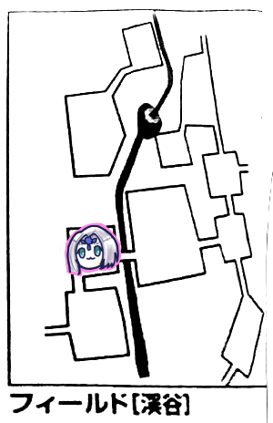
北へ移動。
木々が生い茂ったエリアです。
南には我々が上ってきた坂。
東には石橋がありました。しっかりとした造りで落ちることはなさそうです。
イベントをナナシが振り、4が出ました。渓谷イベントです。出目は5。
GM「大きなきのこがありました」
「スーパーキノコかな」
「食べるとでかくなる？」
GM「見識判定をどうぞ」
ピーター「ころころ…成功です」
GM「これはへびきのこです。売れば100ガメルになります。これは蛇の好物で、一定数集めて放置しておけば蛇をおびき寄せることができます」
「ヒドラとかおびき寄せたりできるのかな」
GM「蛇っぽいものには全部効果があります」
「これ持ってたら蛇が寄ってくるのかな」
「密封できればいいんじゃない？布団収納する袋みたいなやつで」
「この世界にそんなもの存在するの？ｗ」
GM「持ち歩く分には大丈夫です。なお、効果は2個以上ないと発動しません。順番に、2、3、4、5、8、10個で、数が多ければ多いほど強力なやつをおびき寄せることができます」
タッシュ「これ単純にきのこの数＝おびき寄せることのできる敵のレベルだろ」
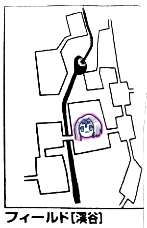
東へ移動。
廃村がありました。ここが襲撃を受けて滅んだという集落。
ブルーローズがイベント2を振りました。何も起きません。
今日なんか平和ですね(平和とは言っていない)
東にはのぼりの山道、北西にはつり橋がかけられていた痕跡がありました。
渓谷に足を踏み入れた時にマップに書いてないとか言われてたのはこれのことですね。
GM「つり橋だった場所には丈夫なロープが残っており、本来そこにあったはずの橋げたがないようです」
ピーター「豆の木は残ってるよ！」
北西エリアに移動する時はそれを使おう、ということになりました。
GM「ここも船小屋と同じで、調べる場合は全員で調べなければなりません」
「人の気配とかないの？」
GM「特に感じられません」
「じゃあ調べよう」
GM「君たちが集落を調べようとすると、集落から全身灰色の人型の生物と、古びた武器を持つ剣士が現れました」
「気配ない言うたやーん」
戦闘です。
ハゲはグール、剣士はデスソード、あと後ろにグールメイジがいることが判明しました。
全部アンデッドです。今回アンデッド回かな？
先制も取りました。
ピーター「みんなが移動する前にファイアブラストを3体に撃ちます。えーと…何もないところって基点にできます？」
敵の前衛と後衛の間が5m離れているため、その間を基点にして3m範囲魔法を撃ちたい、ということらしいです。
この問題でしばらく議論が起こりました。結局基点となる対象がないとダメということになりました。
ピーター「それじゃ対象は前衛のグールとデスソードの2体で。判定振ります。ゾロ目じゃなければ成功。ころころ…4ゾロ」
みぞれ「ゾロ目だよ」
GM「失敗だね」
ピーター「あっ…えっと…！」
グールが抵抗し、デスソードが抵抗失敗しました。
ピーター「あとブルーローズにヴォーパルウェポンかけます」
ここでお知らせですが、今まで多分ボーパルウェポンって書いてたと思いますが、アルケミストワークスを手に入れたのでヴォーパルウェポンであることを知りました。
バルバロステイルズ入手辺りからモンスターに関するあれこれもそこそこ正確になってきているかと思います。
これだから！エターナルのシナリオ本も欲しくなるんですよ！！！
タッシュ「うーん…これメイジの真語魔法が怖いんだよなー、どうしよう…うん、かけとくか、カンタマをパーティー全員に、精神抵抗が+2されます」
ブルーローズ「前に出ます！そしてグールに攻撃します！ドラゴンテイル生やしていいかな？」
「なんでそこ確認するの？ｗ」
ブルーローズ「えーと、やっぱりハードノッカーにします。魔力撃つけてグール殴りまーす。あっクリティカル」
GM「無理です」
ブルーローズ「ダメージはー2dで…うわ」
ナナシ「すげぇ、6も出た」
ナナシが低い出目を賛美する芸を習得しつつあるｗ
ブルーローズ「えーと18点！追加攻撃いきまーす」
追加攻撃も当ててグール撃破！つよい。
ナナシがデスソードに挑発攻撃。いつもより威力が出た模様。
みぞれがキャッツアイ、タゲサ、ソリバレでグールメイジに攻撃。
珍しく当てました。削っていきます。
敵のターン、挑発のかかったデスソードがナナシを狙います。
GM「ここは死の刃で…！死の刃を……使わない、普通に攻撃」
ナナシ「回避」
なんだったんだｗ
GM「それじゃグールメイジの番。デスソードすまん泣いてくれ、ライトニングで全員に貫通！」
「対象選ばなきゃダメだよ」
GM「(ナナシのマーカーを指して)ブルロー」
「そいつナナシですｗ」
GM「あっｗえー、ブルーローズ基点にして、全員が対象になります。各自1d6を振って3以下で当たります。はい当たった人ー」
ブルーローズ「はーい」
みぞれ「はーい」
GM「じゃ当たった人、抵抗判定してください」
ブルーローズ「失敗」
みぞれ「失敗」
GM「それじゃ威力20で…13点ずつダメージどうぞ」
「痛い痛い」
ピーター「パラミスを2体にかけます」
ナナシ「えっやめて？…あっ俺じゃないんだ(汗)」
ピーター「あれ、これ鷹の目ないと乱戦の後ろには通らないんだよね？」
ナナシ「所詮はうさぎの目」
ピーター「やっぱりナナシにもかけようかな」
続いてブルーローズがデスソードに攻撃、しかしGMがクリティカル回避。
GMまじでクリティカル回避多すぎじゃないですかね？
ブルーローズの追撃がヒットし、残り4点となりました。
ナナシ「これはみぞれ落とせるでしょ」
みぞれ「え？そんなダメージ出ないよ？？？こいつ残り17点でしょ？」
「それファイアブラストの分忘れてるんじゃ？」
みぞれ「……ごめん、途中でダメージ引いてたつもりが足してた」
「おい」
みぞれ「えーとこれ残り4点かな？そいじゃキャッツアイは入ってるんでタゲサソリバレ、おっ5ゾロ、命中16」
GM「高いな、回避失敗」
みぞれ「点数はー、えーとさっきと同じだから」
GM「あ、死んだ死んだ」
今HP計算見返したんだけどそれでも明らかに計算おかしい…
ちょっとダメージ履歴表の書き方は見直さなければなりませんね…
残りは後衛のみ！ナナシが後衛のグールメイジに詰め寄って挑発攻撃します。
残り14点。
ピーター「MPもったいないから何もしません。でもライトニングの射程外には出るよ」
GM「それじゃうさぎが抜けた状態でライトニング撃ちます」
ブルーローズ「当たった」
みぞれ「当たった、抵抗も失敗」
GM「12点ダメージどうぞ」
ブルーローズ「生き残ったー！」
みぞれ「生き残ったー！」
なんでこの主従こんなギリギリを生きているんですかねｗ
ブルーローズ「魔力撃ハードノッカー！…するために、前に出ます！」
GM「この核爆弾は避けなきゃやばい…いちたりなーい」
ブルーローズ「えいえいっ、怒ったー？」
GM「おこ…った…ばたり」
戦闘終了ー！
「よーしドロップ品漁るぞー」
GM「ドロップ品漁る以外に廃村の探索ができます。なおこれ以降も廃村を調べようとする度にこのアンデッドが出ます。廃村の探索は1回成功したらそこで終了です」
みぞれ「つまり主の巣と同じシステム。なら素目部隊でドロップ品を漁れば良いのでは？」
ピーター「とりあえずウィスパーヒール2回撃ちます」
毎度おなじみ、うさぎを囲む会。
ブルーローズ「足りないのでヒーリングポーション飲みます」
みぞれ「ヒーリングポーションにもレンジャー技能付くんだっけ」
GM「付きます」
ブルーローズ「えっ飲ませて欲しい」
GM「本人以外が飲む場合は主動作になって1ターン消費します。コツとか教えながら飲ませないといけないので」
ブルーローズ「じゃあ自分で2本飲みます」
みぞれ「私も飲みます」
ナナシ「それじゃ廃村を探索！失敗！」
「ここは成功しておいた方がいいのでは？施設効果で振り直しましょ」
ナナシ「成功！」
GM「探索結果を1d6でどうぞ。1以外は全部魔法の道具になりますよ」
ナナシ「なんだって！よし、まずは素振りを…よしOK」
「フラグ立てるのやめて」
ナナシ「ころころ…っしゃ！6！」
ブルーローズ「これは遺跡か！？」
ナナシ「これ俺今日の仕事終わった気がするわー」
GM「どす黒い刃を持つ両手剣が見つかりました」
「やばい」
「呪われてそう」
GM「これは宝物鑑定判定になります。知名度15でどうぞ」
ナナシ「よっしゃー…う、足りない…！」
「指輪割れば？」
ナナシ「知力はこれしか持ってないんすよー」
タッシュ「知力の指輪2個余ってるよ」
ナナシ「よっしゃぱりーん」
「何余ってるって」
タッシュ「割る用の買いだめ」
GM「成功ですね、これは『狂戦士の魂』という名前の両手剣です。威力27、クリティカル値8…これ壊れ性能だな」
「もしもの時のためにタッシュ先生これ持っておけば？」
「これ呪いがあるから売る方がいいかもよ」
「精神抵抗に失敗するとこの武器しか使えなくなる呪いか、でも戦闘終了後に解けるみたいだからトドメに使うのはアリかもよ？」
ドロップ品を漁り、つり橋を渡るか東へ向かうか迷いましたが、協議の結果、滝の右上が怪しいということで東へ向かうことに。
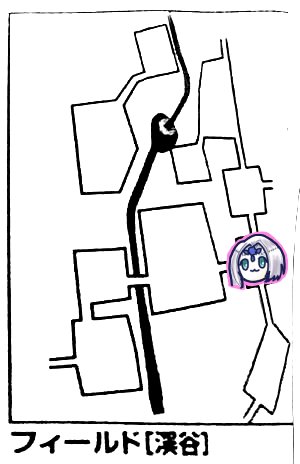
東へ移動。
ごつごつとした斜面がどうとか。
ぶっちゃけGMが読み上げるエリア情報をちゃんと把握してメモれないのが辛いところ。
だからエターナルシナリオ本が欲ｓ
みぞれがイベントを振り、1が出ました。何も起きません。
各自自由行動。
みぞれが魔香草をピーターに使いました。
ナナシ「探索成功でーす」
GM「鉄を見つけました」
「鉄」
ここからは北と南へ行くことができます。
目的地へ行くには当然北なのですが…
「消耗してきたから宿泊施設が欲しい。今までの傾向だとここにある気がする」
ということで、いったん南へ向かうことになりました。
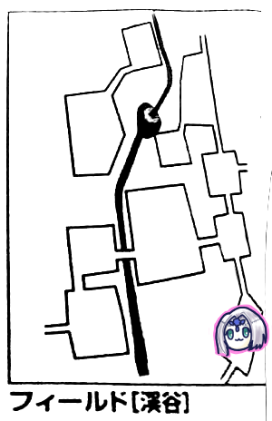
南へ移動。
草地でした。眼下には渓谷があります。
タッシュがイベントを振り、4が出ました。
渓谷イベントで2が出ました。
GM「おいしそうな匂いの果実があります。君たちはそれを食べたくて仕方がなくなります。精神抵抗をどうぞ」
「毒かな？タッシュが先行して全部食べればいいんじゃない？」
「無茶なｗ毒とは限らないし」
ピーター「失敗しました」
みぞれ「失敗しました」
GM「では効果を振ってください。1d6です」
みぞれ「おなか壊しました」
GM「みぞれは3時間の間、行為判定に-1のペナが付きます」
みぞれ「うええええ」
ピーター「とてもおいしかった」
GM「HP1d6回復します」
GM「あ…忘れてた、ここの主はアクティブなので毎回移動します」
「まじか」
GM「というわけでブルーローズ、1d6どうぞ」
ブルーローズ「1です」
GM「ふむ」
北へ戻ります。
期待していた宿泊施設がなかったので、先程のエリアに戻りました。
ピーターがイベントを振り4、渓谷イベントで5が出ました。
GM「大きなきのこがあります」
きのこ2個目を入手しました。
主が移動しましたが、今回もかちあわなくて済んだようです。
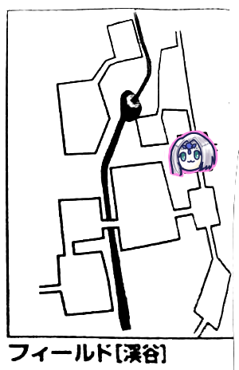
北へ移動。
マップ上は東に道が続いているように見えますが、北東端のブロックに位置しているので東へは行けません。
ここは渓谷全体を見渡せる山の頂のようです。
みぞれ「主は見えないんですか」
GM「主はここから目視できるほどでかくないです」
GM「ここには寂れた山小屋があります」
「休憩できますか」
GM「調べてみないとわかりません」
「またノックしたら扉がずーんって倒れるんじゃ？」
とりあえずイベント判定。ナナシが2を出しました。何も起きませんでした。
GM「ここも全員で調べないとダメな場所ですがどうしますか」
ナナシ「聞き耳します」
GM「はい、危険感知判定してください」
ナナシ「えっ…成功」
GM「山小屋の扉が、中から外に向けてどーんと倒れてきました。中には黒いガス状の魔物がいます。人間の形を取ったりまた別の形になったりしています」
「ホラーかな」
魔物知識判定に成功、相手はイビルヘイズと判明しました。
通常武器無効だそうです。
ナナシ「じゃブラントウェポンかけなきゃ」
タッシュ「ブラントウェポンは無理だよ、エンチャントとかファイアウェポンとかじゃなきゃ」
ナナシ「……？俺今何て言いました？」
タッシュ「ブラントウェポン」
先制は同値でなんとか取りました。
GM「あ、そうだ、こいつかけら刺さってます」
「はい？」
「え、これボス戦か何かです？」
ピーターが初手パラミスをかけた上でフレイムアローを撃ちました。抵抗成功されて7点。
タッシュ「ファイアウェポンをブルーローズ、ナナシ、みぞれにかけます」
みぞれ「私にかける必要ある？」
タッシュ「ダメージ+2になるから一応」
ブルーローズ「私、セイクリッドウェポンかけようと思ってるんだけど」
GM「えーと…名前が違うから重複しますね」
「ファイアーセイクリッドウェポン」
「なにそれかっこいい」
ブルーローズ「じゃあ前には出ずに尻尾を生やします。そしてセイクリッドウェポンを自分にかけます」
ピーター「ゾロ目じゃなければ発動！」
「ピーターゾロ目失敗好きだよね」
ブルーローズ「発動！セイクリッドファイアウェポンになりました！」
もはや名前の順番が謎である。
ナナシ「前に出てガゼルフットとキャッツアイ使います。通常攻撃！ぶっころす！16！」
GM「7で回避！」
ピーター「パラミスの-1しました？」
GM「あっそうだ…あああ…避けられない」
ナナシ「きたクリティカル！追加ダメージは…あっ1ゾロ…」
クリティカル後の追加ダメージ0というのもなかなか珍しいですね、かなしい。
みぞれはパラミス分差し引いても回避されました。
敵のターン。
GM「毒煙の息を吐きます。18で生命抵抗どうぞ」
ナナシ「のぉーーー」
GM「2d+6で…11点ダメージどうぞ。これは魔法ダメージになります」
ブルーローズ「近づいてドラゴンテイルもう一回発動します。命中を1点上げます。でドラゴンテイルと魔力撃で」
GM「回避いちたりない…」
ブルーローズ「わー命中上げといてよかったー！ダメージは…うわ低い、えーと…19点です」
GM「は？ダイス目3でなんでダメージ19まで跳ね上がるの…」
ブルーローズ「追撃します！」
GM「クリティカル回避」
GMの出目が強すぎる。
タッシュがバイタリティを前衛にかけました。生命抵抗+2に。
みぞれは回避されました。いつもの。
ナナシ「ライトメイス置きます。レイピア抜きます。さあかかってこい！…かかるのは俺だー！」
GM「回避失敗しました」
ナナシ「轟け！ころころ……ふふっ……」
GM「轟かなかったらしい」
ピーター「こいつ残りHPいくつ？」
みぞれ「私の計算だと31」
ピーター「31はちょっと削れないんでやめておきます…あ、えっと、パークメイルを前衛エリアにかけます。発動」
GM「パークメイル毒の息に効くの？」
ピーター「ぅぇ？えー……防護点上げるので魔法には効かないですね、パラミスに変えていいですか」
GM「どうぞ」
ピーター「ではパラミス」
GM「抵抗しました」
GM「ではこちらのターン。イビルヘイズが前衛を悪魔のどくどくモンスターに変える！毒の息！」
ナナシ「抵抗！」
ブルーローズ「抵抗！」
GM「ではダメージ10点の半分で、5点ずつどうぞ」
ピーター「パラミス撃ちます」
GM「抵抗失敗しました」
ピーター「3ターンかなー」
かなーってｗ
タッシュ「3人にファナティシズムかけます。はい発動」
ブルーローズ「ドラゴンテイルで攻撃します！えーとこれ今命中どうなってるんだ」
ドラゴンテイル2倍がけで+2
ファナティシズムで+2
セイクリッドウェポンで+1
合計命中+5、これはやばい。
ピーター「でGMの方はパラミスで-1ですからね」
これはやばい。
ブルーローズが怒涛の命中力と火力で2発当ててイビルヘイズを沈めました。
GM「イビルヘイズを倒したことにより星を1つ獲得しました」
「イビルヘイズのドロップ品…は、ないから漁らなくていいか」
「いや、かけらがある、漁れ漁れ」
「かけら6個ゲットー」
GM「さて、君たちが小屋に入ると、そこには10人分ほどの白骨死体がありました。人間のものと蛮族のものが混ざっています。密室状態で乱戦が繰り広げられたようですね」
「壮絶だ」
GM「探索すると、ヒーリングポーションが5本、魔香水が3本、あと楽譜が見つかりました」
ブルーローズ「バードが読んでみますよ」
GM「ではバード、見識判定をどうぞ」
ピーター「私も判定していいですか」
GM「これはバード技能ないとダメなやつです」
ブルーローズ「8でーす」
GM「これは『優しきウルトゥケの楽譜』です」
「オボロンじゃない？？？」
「オボロンの楽譜は既に持ってるよ」
GM「楽譜を見つけたことによって星を1個獲得しました」
「で、ここは休める？」
GM「残念ながらここでは休めません」
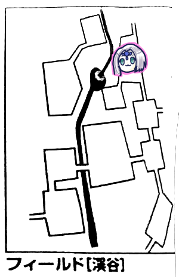
仕方がないので北へ移動します。
GM「主の移動を振ってください」
タッシュ「ころころ…5」
GM「ああ…！今じゃないんだ…！」
ピーター「これいっこ後ろにいるやつだ」
ここのエリアは森になっていました。
どこからか笛を吹いている音が聞こえるようです。
ブルーローズがイベントを振り、1が出ました。何も起きません。
今回割と何も起きない率高いですね。いいことだ。
GM「では目標値10で探索をどうぞ」
「10？いつもの13じゃなくて？」
ナナシ「成功」
GM「ナナシは南西への隠された通路を見つけました」
どうやら判定に成功しないと南西へは移動できなかったようです。
GM「南西へ向かう道は洞窟になっています」
「笛のような音ってもしかして」
GM「はい、その洞窟を風が吹き抜ける音ですね。洞窟内は暗いので灯りがないとペナが付きます」
タッシュ「ぺかー」
ナナシ「それじゃ移動する前に探索します」
「え、ナナシもう探索したでしょ？」
ナナシ「あっ」
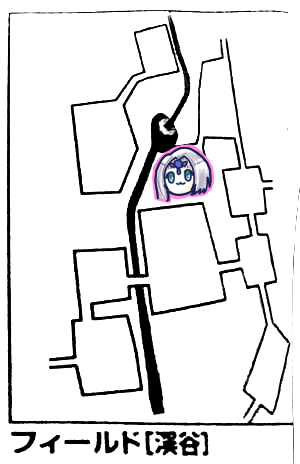
南西へ移動。
ピーターが主の移動を振りました。追いつかれたりはしなかったようです。
洞窟内は下に降りる構造になっており、移動先は滝壺になっていました。
GM「ウンディーネが3体います。君たちに気がつくと近づいてきました」
ピーター「(妖精語で)やっほー」
ウンディーネ「きゃー人よ人よー！」
「軽い」
ウンディーネ「前は滝の上にあった都の人たちがよく遊びにきてたのに、最近は全然来なくなっちゃってー」
「滝の上の都…オボロンのことかな」
「前って、どれぐらい前？」
ウンディーネ「結構前ー」
GM「妖精には時間の概念がありません。なのでどれぐらい、というのは測れません」
ウンディーネ「ちょっと前に下流にある集落を蛮族が襲撃してたから心配してたのよー」
「襲撃って20年前って言ってたよね」
「『ちょっと前』が20年か」
「じゃ『結構前』はやっぱりオボロンのことだな」
ウンディーネ「それでね、頼み事があるんだけどー」
「何でしょう？」
ウンディーネ「川下のポルターガイストに囚われたゴーストがいるんで助けてあげて欲しいのー」
「ポルターガイストに囚われたゴースト」
GM「クエスト『ゴーストを助けて』が発生しました。どうしますか？」
「…えーと、受けます、というか、助けました」
GM「はい、ではクエスト達成です。星2つ獲得しました」
「これ…渓谷、東か北から来る想定だったのでは…？」
GM「報酬として、ウンディーネからアイテムがもらえます。水の結晶1600ガメル相当が5つ、もしくはウンディーネの宝石に変更可能、とあります」
「ウンディーネの宝石ってなに」
GM「フェアリーガーデンのアイテムみたい…サプリ持ってきてないから分からない…」
「ウンディーネ召喚できるアイテムとかじゃないの？とりあえずそれ貰っとこう」
ピーター「(るるぶを見つつ)あっ…ルーンフォークって妖精見れないんだ…」
みぞれ「そういやそうだった、みんな何と話してるんだろうｗ」
「オボロンがどこにあるか分かる？」
ウンディーネ「オボロンは西だよー」
「うわやっぱりこっちじゃなかった、戻らなきゃ」
「ここから西に抜け道があったりしませんか」
GM「ありません」
どうやらここにも主は移動してくるらしく、休むこともできません。
しかし、都の位置の情報を得たことで星1つ獲得しました。
そんな獲得条件もあるんですね。
来た道を戻ります。
主も移動します。
この辺から、主の移動とイベント振る人は同じ人がやる、ということになりました。最後に誰が振ったか分からなくなるので。
ナナシがイベントを振り、渓谷イベントが発生しました。
GM「大きなきのこがあります」
ピーター「あっそれね、見識判定します」
GM「えっと、今回は先に生命抵抗お願いします」
みぞれ「失敗しました…」
ブルーローズ「みぞれ…今日…体調悪い日だね…？」
GM「これは動物に寄生して栄養を吸い取るキノコです。病気ダメージ3点どうぞ」
みぞれ「うええ」
GM「以降、6時になるごとに生命抵抗判定してもらいます。失敗でまた3点ダメージです。で、寄生されたまま死ぬとキノコの苗床にされて完全死亡します」
「こわっ」
GM「生命抵抗判定は12で成功、13で完治します」
ここから西へは行けないようなので、戻って集落から橋を渡ることに。
南へ移動。
主移動とイベントをブルーローズが振り、渓谷イベントを起こしました。
GM「ショッキングピンクの木の実があります。精神抵抗どうぞ」
全員成功しました。
ブルーローズ「これ食べたら回復することもあるんだよね？」
GM「食べてみる？いいよ？どうぞ？」
ブルーローズ「使えるかもしれないから持っていこう」
ピーター「シドに食わせてみるとか」
ナナシ「これお土産だからー」
シドかわいそうｗ
GM「持ってってもいいですが、日をまたいだらまた判定してもらいますよ」
「気づいたら誰かが食べてるかもしれないやつだ」
ナナシ「探索しまーす、鉄見つかりました」
みぞれ「探索しまーす、鉄見つかりました」
「ピーターの荷物が鉄で埋まっていく」
「この冒険が終わったころにはピーターは筋肉むきむきに」
「『貴様…パイとか言ったかな？』ドスッ、と鉄が詰まった荷物を下ろす…と」
南へ移動。
主移動とイベントをみぞれが振り、安定の渓谷イベントが発生。
GM「例の果実があります。精神抵抗どうぞ」
みぞれ「失敗しました…」
GM「毒です。2点ダメージどうぞ」
「みぞれ今日の星占い最下位だったでしょ」
「蟹座のあなたはー」
「待ってみぞれ蟹座なのｗ」
集落まで戻ってきました。ここで夜になってしまいます。
暗くなりますが例によってタッシュが灯りを提供。
主移動をタッシュが振ります。
GM「ぐぬぬ…またさっきいたエリアに…」
タッシュがイベントを振り、渓谷イベント。
GM「崖崩れが発生しました」
ナナシ「みぞれーーー！！！」
みぞれ「まだ判定してないからｗ」
ピーター「失敗しました」
みぞれ「…失敗しました」
GM「2人とも、15引く防護点のダメージをどうぞ」
ナナシ「女うさぎばかり狙いよって…許さんぞ崖崩れめ！」
ピーター「それじゃつり橋にジャックの豆の木を使いまーす」
タッシュ「豆の木っていくら？」
ピーター「100ガメルです」
タッシュ「え、やっす」
ナナシ「20個ぐらい買っておこうぜ」
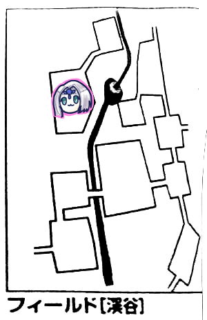
橋を渡って西へ移動。
主移動判定後のGMのお言葉「一番イヤなパターン」
ここは北へ続く山道があるようです。
休める場所はないようです。
とすると、もう可能性があるのは主の巣のみになるのですが…ひょっとして渓谷には休める場所がない？
ピーターがイベントを振り、渓谷イベントが発生。
GM「メタリックゴールデンの果実があります」
どれだけ謎の実なってるんだろこのフィールドｗ
今回は全員抵抗成功しました。
ブルーローズ「これも持って行こうかな」
GM「抵抗判定2回になるよ」
ブルーローズ「やめときます」
GM「ここは探索判定に成功したらいいことがあります」
ナナシ「成功」
GM「探索の結果とは別に、休める場所が見つかります」
「ナナシ様ー！」
「ナナシ様ー！」
「それじゃ3時間の休憩…でいいかな？」
GM「主の移動が3回振れますね！」←嬉しそう
「ここには来ないよね？」
GM「(にやにや)」
主移動判定を3回行った後のGM「…違う！違うんだ！」
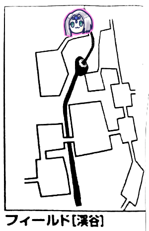
北へ移動しました。
主移動判定を行った後のGM「今じゃないんだ…！」
「あ、これまた後ろにいるな」
GM「休憩中を襲いたかった…」
「休憩中に来るんだ、こわっ」
ナナシがイベントを振り、何も起きませんでした。
GM「川を遡ったところに洞窟があります。中は暗いです。足元に無数の骨があり、足場が悪いので命中と回避に2ペナを受けますが、騎獣に乗っていればペナ受けません」
「ここが主の巣かな」
GM「探索をするなら目標値14でどうぞ」
ナナシ「成功」
GM「ヒドラの巣探索結果表振ってください」
ナナシ「8」
GM「象牙が見つかりました」
「…で、今のはいつもの主の巣探索で、オボロンとは関係ないよね」
「ここで歌えばオボロンが現れると」
ブルーローズ「歌います！」
GM「バード技能+器用で、目標値9でどうぞ」
ブルーローズ「おぼろーん♪おぼぼぼぼぼぼぼろーん♪ころころ、ぴったり9です！」
GM「オボロンの廃都が出現しました」
廃都オボロン
そこは人気のない廃墟でした。高熱によって焼かれたらしい痕跡があります。
あと暗いそうですが、我々は暗いペナとは無縁です。
GM「廃都は遺跡と同じように深さを潜っていく形になります。但し遺跡とは違う表を使います。あと魔神語を喋るやつは出てきません」
我々の脳裏に蘇る魔神語事件。
GM「ここにいられるのは6時間、1行動30分なので、最大12回行動できます。この12回の行動のうちに刻印を見つけることができればクリアとなります」
残りのルールは遺跡と同じようです。
つまりは
・普通に進むか急いで進むかを選択、後者は各種判定にペナが付く
・探索判定実施、失敗したら魔物と遭遇するかも
・探索判定に成功したら、普通に進む場合1d6、急いで進む場合2d6進める
・進んだ先でイベント処理
こんな感じですかね。
廃都オボロン～深度0、0分経過
「どうする？普通に行く？」「普通に行こう、大丈夫でしょ前回みたいにあんな1とか出ない」
ナナシ「探索成功！1d6は6！」
廃都オボロン～深度6、30分経過
イベントは特に何も起きませんでした。遺跡ではダイス目でイベント決めてましたが、廃都は深度でイベント固定のようです。
普通に進みました。
探索成功しました。
深度は+5されました。
へいわ。幸先いいですね。
廃都オボロン～深度11、1時間経過
廃都イベント表を振らされました。GM「廃屋の倉庫のような部屋があって、金属のなまくらったものを見つけました。見識判定どうぞ」
ブルーローズ「クリティカル成功です！さっきオボロンの歌詞に出てきたんでこれが何だかわかります！」
GM「ブルーローズが金属を磨くと、金貨の輝きを取り戻しました。これは5王国の金貨です。1d6枚見つかります」
ブルーローズ「6枚！本当にここは『富めるオボロン』だったのですね…」
GM「うまいこと言った」
今回も普通に行くことにしました。
探索判定は1足りなかったので動けません。そのまま時間が経過します。
廃都オボロン～深度11、1時間半経過
今度は探索成功。深度が+3されました。
廃都オボロン～深度14、2時間経過
GM「魔物と遭遇しました。魔物の種類を…えーと、ちょっと待ってね」「？」
GM「すいませんねおぼろげでー」
「？？？」
GM「外した…」←「オボロン」と「おぼろげ」をかけていたらしい
GM「ここの魔物は固定です。新顔の骸骨が2体と、デスソードが2体です」
ピーター「魔物知識判定しまーす」
GM「新顔はスケルトンアーチャーです。デスソードと両方弱点抜きました」
ナナシ「先制取りましたー」
「デスソードの弱点、魔法+2ダメージだから、ピーターとタッシュに頑張ってもらえば」
「…ちょっと2人で魔法を撃つのは抵抗があって」
2人してファンブルするのがトラウマになっている模様ｗ
ピーター「ファイアブラストをデスソードに撃ちます」
GM「うわ、ファンブル」
ピーター「クリティカル！18点ダメージ、プラス弱点の2点で20点ですね」
トラウマブレイカーかな？
タッシュ「これはワンチャンあるんじゃね？デスソードにリープスラッシュ2倍がけ」
GM「2体とも抵抗失敗しました。…え？これエネボじゃなくてリープスラッシュ？」
タッシュ「リープスラッシュ。ダメージは…12点、惜しい2点残った」
みぞれ「それじゃ残飯処理してみよう。デスソードの片方にキャッツアイ、タゲサ、ソリバレで攻撃。よっしゃ18」
GM「う、避けられない」
みぞれ「1ゾロでなければ撃破でーす、はい撃破ー」
ナナシ「デスソードを通常攻撃します……
あっ、俺ライトメイス拾うって言ってない！！！」
「は？？？」
「え、どこで落としたの」
みぞれ「ちょっと待って…(メモを辿る)…北東のエリアだ、遠いｗｗｗ」
タッシュ「ｗｗｗｗｗｗｗｗｗｗｗ」←すごい勢いでむせてる
ナナシ「仕方ないからレイピアで攻撃します。命中、ダメージは…あっクリティカル、あっまたクリティカル、合計20点」
「オーバーキルすぎへん」
ナナシ「アイテムって放置したものはエリア移動したら消滅するんでしたよね…」
みぞれ「えっそんなのあったっけ…あ、ドロップ品とか移動すると消えるんだったっけ」
「さよならライトメイス」
ブルーローズ「魔力撃でスケルトンアーチャーを攻撃」
GM「当たった」
ブルーローズ「骨叩き壊します！17点！追撃しまーす」
GM「回避！」
GM「こっちのターン！スケルトンアーチャーがブルーローズに向けて撃ちます」
ブルーローズ「ひらり」
GM「2匹目もブルーローズ狙うよ」
ブルーローズ「ああっ避けられない」
GM「13点ダメージね」
ピーター「装甲値引かなきゃ」
ブルーローズ「私はドレスしか着ていない！」
なんでそんなドヤるのｗｗｗ
ナナシ「前に出てキャッツアイ入れて通常攻撃します」
GM「くっ当たった、みーつめるキャッツアイ♪」
みぞれ「まーじっくぷれいいすだんしん♪」
GM「知っているのか」
みぞれ「タゲサソリバレで削られてる方のスケルトンアーチャー撃ちます」
GM「回避ー」
みぞれ「まーたーかー」
タッシュ「みぞれの攻撃何が何でも回避するマンだよね」
GM「ダイスの操作とかしてませんよ？？？」
ピーター「弱ってる方の骨にファイアボルト撃ちます」
GM「抵抗失敗しました」
ピーター「おっクリった」
ナナシ「新技使うねーうさちゃん」
GM「死んだわ」
ピーター「そんでパラミス撃っときます」
ブルーローズが魔力撃ハードノッカー追撃で残りのスケルトンアーチャーを5点まで減らしました。
タッシュ「じゃトドメさすかー」
GM「前進して攻撃？」
タッシュ「しないよｗエネボを…あれエネボ射撃かダメだ」
ピーター「え、魔法誘導ないの」
タッシュ「ない。えーリープスラッシュ？こんなやつに使う？うーん…あ、これ命中同値じゃね？前進して攻撃」
ブルーローズ「タッシュ15m移動できたっけ？」
タッシュ「あれこれ15m離れてるのか、それならチアで。一応明日へ向かって10m前進だけしておこう」
GM「アーチャーがブルーローズに攻撃します」
ブルーローズ「避けられません！」
GM「11点どうぞ」
ブルーローズ「あと5点です！」
みぞれ「アーチャーもあと5点なんだが」
ブルーローズ「同じだね、わたしたち同じだね！」
GM「どっちが先に落ちるかチキンレースだねｗ」
ピーター「それじゃパラライズ撃っておきます」
「タッシュ先生！」
タッシュ「明日への一歩が実りました、前進してアーチャー殴ります。魔法使いだぞ私は！」
GM「回避です」
タッシュ「あーもう、ナナシさん！さっさと殴っておしまいなさい！」
ナナシ「俺殴っていい？」
「だから何でいちいち聞くんだｗ」
ナナシ「ころころ…命中15！」
GM「うおー惜しい失敗、パラライズが入ってなければ避けてた！」
ナナシ「ダメージ10点！こいつ防護5点だからぴったり撃破！」
戦闘終了！はぎとりタイム！
GM「ここから達成値が12になります」
ナナシ「成功ー、深度は+3です」
次も普通に進みます。順調なので普通に進みます。
廃都オボロン～深度17、2時間半経過
GM「君たちはあまり損傷がない部屋に辿り着きました。中のものはほとんどが持ち出された後ですが、部屋の隅に光るものを見つけました。1d6どうぞ」ナナシ「ころころ…5」
GM「(ルルブ見ながら)…え、まじ？これまずくない？えーと、オボロンの腰飾りを見つけました。6000ガメル相当で、オボロンの探索に対して+4の補正を得ます」
「+4？やばい」
GM「ここから探索判定の目標値は13になります」
ナナシ「じゃ腰飾りを装備して…やっべー、腰飾りのおかげで成功したわ、深度は+2で」
廃都オボロン～深度19、3時間経過
ブルーローズ「あ！あっちょっと、さっきの戦闘回復してない！私残りHP5点！」うっかりだった。思わぬお宝に気を取られすぎだった。
タッシュ「ちょっと私、前に出ますね。ナナシ、イニシアティブ絶対取ってよ？」
GM「よーしそれじゃ前衛3人、1d6を振るがいい。低い2人が酷い目に遭う」
タッシュとブルーローズが仲良く2を振って対象となりました。
GM「罠感知判定どうぞ」
「ちょ！よりによってスカウトすり抜けてんじゃん」
タッシュ「クリティカル出た！待つんだブルーローズ！」
ブルーローズ「私はその声に反応できるのか！？」
GM「じゃあせっかくクリティカルなのでボーナス付けましょう、ブルーローズは回避判定で振っていいですよ」
ブルーローズ「どっちにしろクリティカル出さないとダメなんですが…ころころ…ぽかーん」
反応できなかったらしいｗ
GM「えーと、それでは、穴の深さはですねー」
「なんか穴の深さって言った」
GM「あー、落とし穴です。1d6で穴の深さが決まります」
ブルーローズ「ころころ…1！」
GM「ということは5mですね、落ちてください」
ピーター「ホバリングかけます！……あ、これ対象術者だった、さよなら」
GM「受け身判定してください」
ブルーローズ「ころころ…8です」
GM「落下ダメージは5m×３で15点、8引いて7点ダメージです」
ブルーローズ「マイナス2です…うぅ…ころころ、生命抵抗判定は成功、気絶しますばたり」
「うわどうしよう、とりあえずロープでブルーローズを引き上げて」
GM「あ、その辺は飛ばしていいです。引き上げたということで」
ナナシ「みぞれ、いつものやつ」
みぞれ「応急手当ですね」
GM「時間がかかる行動をするとモンスターが出てくる可能性がありますよ」
ナナシ「それじゃ仕方ない、アウェイクンポーションで」
ブルーローズ「むくり」
ピーター「ヒールウォーター！ほら飲んで」
ブルーローズ「ごくごく…うーん足りない、ヒーリングポーション飲みます」
ナナシ「じゃ探索振りまーす。成功、深度は+5！」
廃都オボロン～深度24、3時間経過
みぞれ「深度24、3時間半経過…と」「いや3時間だよ」
みぞれ「え？私の計算と違う…」
見返してみても3時間半に見える…とりあえず3時間ってことで。
GM「床に5つの瞳を持つ紋章が描いてあります。そして声が聞こえてきました。『あなたは刻印を望みますか』」
ブルーローズ「望みまーす」
「軽い」
GM「魔物が現れました。えー、これはもう判明してるやつだな、スケルトンアーチャーが1体、イビルヘイズが1体。あと体の所々が腐り落ちている、包帯ぐるぐる巻きの魔物です」
「マミーか」
ピーター「魔物知識判定しまーす」
GM「アーチャーだけ弱点抜きました。包帯はレッサーマミーです」
「レベル6モンスターが2体かー、まぁかけらが刺さってないなら」
GM「あ、かけらは刺さってます。イビルヘイズに」
「は？またそいつ？」
ナナシ「先制取ったぞー」
ピーター「フレイムアロー3倍がけ！」
GM「アーチャーだけ抵抗失敗しました」
ピーター「ダメージは…1ゾロです…」
「一級フラグ建築士」
「これタッシュもファンブる流れですか？」
ピーター「えー…ヴォーパルウェポンをブルーローズにかけときます(泣)」
ここでなんかしら戦術方針協議をしてたはずなんですが忘れましたｗ
ブルーローズがセイクリッドウェポンをナナシにかけます。
ナナシ「前進してガゼルフットとキャッツアイ入れて、レッサーマミーをつつきます」
GM「回避失敗ー」
ナナシ「お、クリティカル」
「お前レイピアの方が合ってるんじゃないのか？」
ナナシ「うるさいｗ」
タッシュはバイタリティを前3人にかけます。
みぞれはキャッツアイタゲサソリバレでレッサーマミーを攻撃。
さすがに当てました。そう何度も外してたまるかｗ(蘇る前回の悪夢)
GM「それじゃアーチャーが乱戦に乱入します。で、そこからピーターを狙う」
ピーター「うわ当たった」
GM「15点ね」
ピーター「3点引いて…これは痛い」
GM「そして前にはナナシしかいないのでマミーはここを抜けて後ろに行きます。タッシュを攻撃」
タッシュ「避けられない」
GM「14点ダメージです」
タッシュ「8点くらいました、あと14点」
GM「呪いが発動するので最大HPも14点になります」
なにそれこわい。
GM「イビルヘイズが毒を吐きます」
ナナシ「クリティカル抵抗！」
GM「成功扱いなのでダメージ半減でどうぞ」
ピーター「マミーにパラミスをA級カードでかけます。これでAのカードはなくなりました」
GM「抵抗しました」
ピーター「では今ターンだけ-2の修正で。これ副行動でもっかいできないのかな……うーん、無理ぽいんでこのままで」
タッシュ「ファイアウェポン3倍がけで前衛にかけます」
ブルーローズ「ドラゴンテイルと魔力撃でマミーを攻撃します」
GM「出目6で回避できる」
ピーター「修正効いてますか？」
GM「…8で回避します。よし10、回避」
ブルーローズ「追加攻撃します」
GM「避けられません」
ブルーローズ「あっクリティカル！…いやドラゴンテイルだからクリティカル届いてないわ。23てーん」
GM「マミー倒れました。これによりタッシュの呪いも解けました」
ナナシ「アーチャーを攻撃します！…ファンブル！」
みぞれ「ここにきてファンブル祭になるのめっちゃラスボス戦って感じしますね」
みぞれ「うーんどうしようかなー」
タッシュ「ナナシが危ないから回復したれ」
みぞれ「じゃあナナシにヒーリングバレット！7点回復でー」
GM「アーチャーがうさぎを攻撃！8点ダメージ！」
ピーター「残り1！生き残った！」
GM「じゃあイビルヘイズの攻撃！大きく息を吸ってー、吐いてー、ナナシに攻撃します。あっクリティカル、13点ダメージどうぞ」
みぞれ「うわヒーリングバレット撃っといてよかった」
ピーター「パラミスをイビルヘイズに撃って、主行動でヒーリングウォーターを飲みます」
「いやヒーリングウォーターは戦闘中は無理じゃね」
ピーター「あっ…アーチャーさんがんばってー」
タッシュ「ここはパラライズ3倍がけをイビルヘイズに！」
「確実化3倍がけとかできるんだ」
タッシュ「3回振って一番高いやつを適用します！…全部低い！まじか！」
GM「はい抵抗」
ブルーローズ「ドラゴンテイルで命中上げて魔力撃…する前に前進します、でなんとかヘイズを殴ります」
「イビルヘイズな」
GM「回避しました」
ブルーローズ「追撃します！命中20！」
GM「高くない？クリティカルのみ…はい失敗」
ブルーローズ「22点！どーん！」
ナナシ「アーチャーを挑発攻撃！うさちゃんを救う！命中19！」
GM「クリティカルのみ！…惜しい5、6！」
「無慈悲GM」
ナナシ「8点ダメージ！」
みぞれ「またヒーリングバレットをナナシに撃ちます！命中、威力出します！…ああああ1ゾロぉぉぉ」
デジャヴ。
GM「イビルヘイズがナナシに毒の息！」
ナナシ「出目3だわ…」
GM「9点魔法ダメージどうぞー」
「生きてる？」
ナナシ「死にそう」
GM「アーチャーがナナシに攻撃します」
ナナシ「その命中ならファンブルしなければ避けられる！…あぶねー」
見えなかったけどやばい出目だったらしい。
ピーター「しつこくパラミスかけます」
GM「抵抗しました」
ブルーローズ「ドラゴンテイルで命中上げます！魔力撃をガスの方に撃ちます、クリティカル！」
GM「それは無理、避けられない」
ブルーローズ「20点ダメージ！はい次ー！」
GM「パラミスがなければ避けられた…うさぎに感謝するんだな！」
ブルーローズ「クリティカル！28点です！」
タッシュ「リープスラッシュ2倍がけでアーチャーとイビルヘイズに撃ちます」
GM「どっちも抵抗失敗」
タッシュ「12点ずつ」
みぞれ「うわイビルヘイズ残り1点」
ナナシ「キャッツアイ入れてアーチャーを挑発攻撃します」
GM「当たりました」
ナナシ「よっしゃ！10点ダメージ！」
みぞれ「イビルヘイズ片付けておきましょう。やった命中19」
GM「回避失敗ー」
みぞれ「1ゾロじゃなかったんで撃破で！」
アーチャーの攻撃はナナシが回避しました。
あとはブルーローズがドラゴンテイルでとどめを刺しました。戦闘終了！
GM「戦闘が終わるとですね、君たちの手の甲に鋭い痛みが走りました。見るとそこには目の形をした刻印が光っています。おめでとう、君たちはオボロンの刻印を手に入れました。星2つ獲得です」
「え、スタンプラリーの押す紙、ここなの？？？」
GM「さて、実は廃都は刻印の階層が最下層ではありません。先へ進むこともできます。先へ進むとモンスターも強くなりますがお宝も豪華になります。どうしますか？」
「ここで帰るって言ったら帰れるの？」
GM「帰るって言ったらセズウィック村まで帰されるよ」
「「「「「帰る！！！！！」」」」」